The GEOMETRY directive is a compound directive that allows the
user to define the geometry to be used for a given calculation. The
directive allows the user to specify the geometry with a relatively
small amount of input, but there are a large number of optional
keywords and additional subordinate directives that the user can
specify, if needed. The directive therefore appears to be rather long
and complicated when presented in its general form, as follows:
GEOMETRY [<string name default geometry>] \
[units <string units default angstroms>] \
[(angstrom_to_au || ang2au) \
<real angstrom_to_au default 1.8897265>] \
[print [xyz] || noprint] \
[center || nocenter] \
[bqbq] \
[autosym [real tol default 1d-2]] \
[autoz || noautoz] \
[adjust] \
[(nuc || nucl || nucleus) <string nucmodel>]
[SYMMETRY [group] <string group_name> [print] \
[tol <real tol default 1d-2>]]
<string tag> <real x y z> [vx vy vz] [charge <real charge>] \
[mass <real mass>] \
[(nuc || nucl || nucleus) <string nucmodel>]
... ]
[ZMATRIX || ZMT || ZMAT
<string tagn> <list_of_zmatrix_variables>
...
[VARIABLES
<string symbol> <real value>
... ]
[CONSTANTS
<string symbol> <real value>
... ]
(END || ZEND)]
[ZCOORD
CVR_SCALING <real value>
BOND <integer i> <integer j> \
[<real value>] [<string name>] [constant]
ANGLE <integer i> <integer j> \
[<real value>] [<string name>] [constant]
TORSION <integer i> <integer j> <integer k> <integer l> \
[<real value>] [<string name>] [constant]
END]
[SYSTEM surface <molecule polymer surface crystal default molecule>
lat_a <real lat_a> lat_b <real lat_b> lat_c <real lat_c>
alpha <real alpha> beta <real beta> gamma <real gamma>
END]
END
The three main parts of the GEOMETRY directive
are:
The following sections present the input for this compound directive in detail, describing the options available and the usages of the various keywords in each of the three main parts.
This section presents the options that can be specified using the keywords and optional input on the main line of the GEOMETRY directive. As described above, the first line of the directive has the general form,
GEOMETRY [<string name default geometry>] \
[units <string units default angstroms>] \
[bqbq] \
[print [xyz] || noprint] \
[center || nocenter] \
[autosym [real tol default 1d-2]] \
[autoz || noautoz] \
[adjust] \
[(nuc || nucl || nucleus) <string nucmodel>]
All of the keywords and input on this line are optional. The following list describes all options and their defaults.
<name> - user-supplied name for the geometry; the
default name is geometry, and all NWChem modules look for a
geometry with this name. However, multiple geometries may
be specified by using a different name for each. Subsequently,
the user can direct a module to a named geometry by
using the SET directive (see
the example in Section 5.7) to associate the default
name of geometry with the alternate name.
units - keyword specifying that a value will be entered
by the user for the string variable <units>. The default
units for the geometry input are Angstrøms (Note: atomic units or
Bohr are used within the code, regardless of the option specified
for the input units. The default conversion factor used in the code
to convert from Angstrøms to Bohr is 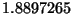 which may be
overidden with the angstrom_to_au keyword described below.). The code
recognizes the following possible values for the string variable
<units>:
angstroms or an -- Angstroms (Å), the default
(converts to A.U. using the Åto A.U. conversion factor)
au or atomic or bohr -- Atomic units (A.U.)
nm or nanometers -- nanometers (converts to
A.U. using a conversion factor computed as 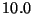 times the
Å to A.U. conversion factor)
pm or picometers -- picometers (converts to
A.U. using a conversion factor computed as 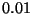 times the
Å to A.U. conversion factor)
angstrom_to_au - may also be specified as
ang2au. This enables the user to modify the conversion
factors used to convert between Å and A.U.. The default value is
.
bqbq - keyword to specify the treatment of interactions
between dummy centers. The default in NWChem is to ignore such
interactions when computing energies or energy derivatives. These
interactions will be included if the keyword bqbq is
specified.
print and noprint - complementary keyword pair to
enable or disable printing of the geometry. The default is to print
the output associated with the geometry. In addition, the keyword
print may be qualified by the additional keyword xyz,
which specifies that the coordinates should be printed in the XYZ
format of molecular graphics program XMol.
center and nocenter - complementary keyword pair
to enable or disable translation of the center of nuclear charge to
the origin. With the origin at this position, all three components
of the nuclear dipole are zero. The default is to move the center
of nuclear charge to the origin.
autosym - keyword to specify that the symmetry of the
geometric system should be automatically determined. This option is on
by default. Only groups up to and including 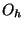 are recognized.
Occasionally NWChem will be unable to determine the full symmetry
of a molecular system, but will find a proper subgroup of the full
symmetry. The default tolerance is set to work for most cases, but may
need to be decreased to find the full symmetry of a geometry. Note that
autosym will be turned off if the SYMMETRY group input is given
(See section 6.2).
noautoz - by default NWChem (release 3.3 and later)
will generate redundant internal coordinates from user input
Cartesian coordinates. The internal coordinates will be used in
geometry optimizations. The noautoz keyword disables use of
internal coordinates. The autoz keyword is provided only for
backward compatibility. See Section 6.5 for a more
detailed description of redundant internal coordinates, including
how to force the definition of specific internal variables in
combination with automatically generated variables.
adjust - This indicates that an existing geometry is
to be adjusted. Only new input for the redundant internal
coordinates may be provided (Section 6.5). It is
not possible to define new centers or to modify the point
group using this keyword. See Section 6.5 for
an example of its usage.
nucleus - keyword to specify the default model for the nuclear
charge distribution. The following values are recognized:
point or pt -- point nuclear charge distribution. This
is the default.
finite or fi -- finite nuclear charge distribution
with a Gaussian shape. The RMS radius of the Gaussian is determined from
the nuclear mass number 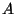 by the expression
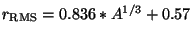 fm.
The following examples illustrate some of the various options that the
user can specify on the first input line of the GEOMETRY
directive, using the keywords and input options described above.
The following directives all specify the same geometry for 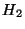 (a bond length of 0.732556 Å):
geometry geometry units nm
h 0 0 0 h 0 0 0
h 0 0 0.732556 h 0 0 0.0732556
end end
geometry units pm geometry units atomic
h 0 0 0 h 0 0 0
h 0 0 73.2556 h 0 0 1.3843305
end end
The SYMMETRY directive is used (optionally) within the compound
GEOMETRY directive to specify the point group for the molecular
geometry.
The general form of the directive, as described above within the general
form of the GEOMETRY directive, is as follows:
[SYMMETRY [group] <string group_name> [print] \
[tol <real tol default 1d-2>]]
The keyword group is optional, and can be omitted without
affecting how the input for this directive is processed6.1. However, if the SYMMETRY directive is
used, a group name must be specified by supplying an entry for the
string variable <group_name>. The group name should be
specified as the standard Schöflies symbol. Examples of expected
input for the variable group_name include such entries as:
c2v - for molecular symmetry 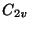
d2h - for molecular symmetry Td - for molecular symmetry d6h - for molecular symmetry
The SYMMETRY directive is optional. The default is no symmetry
(i.e., 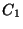 point group). Automatic detection of point
group symmetry is available through the use of autosym in the
GEOMETRY directive main line (discussed in Section 6.1).
Note: if the SYMMETRY directive is present the autosym
keyword is ignored.
If only symmetry-unique atoms are specified, the others will be
generated through the action of the point group operators, but the
user if free to specify all atoms. The user must know the symmetry of
the molecule being modeled, and be able to specify the coordinates of
the atoms in a suitable orientation relative to the rotation axes and
planes of symmetry. Appendix C lists a number of
examples of the
GEOMETRY directive input for specific molecules having symmetry
patterns recognized by NWChem. The exact point group symmetry will be
forced upon the molecule, and atoms within 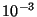 A.U. of a
symmetry element (e.g., a mirror plane or rotation axis) will be
forced onto that element. Thus, it is not necessary to specify to a
high precision those coordinates that are determined solely by
symmetry.
The keyword print gives information concerning the point group
generation, including the group generators, a character table, the
mapping of centers, and the group operations.
The keyword tol relates to the accuracy with which the symmetry-unique
atoms should be specified. When the atoms are generated, those that are
within the tolerance, tol, are considered the same.
The default in NWChem is to specify the geometry information entirely in Cartesian coordinates, and examples of this format have appeared above (e.g, Section 2.3). Each center (usually an atom) is identified on a line of the following form:
<string tag> <real x y z> [vx vy vz] \
[charge <real charge>] [mass <real mass>] \
[(nuc || nucl || nucleus) <string nucmodel>]
The string <tag> is the name of the atom or center, and its case
(upper or lower) is important. The tag is limited to 16 characters
and is interpreted as follows:
<tag> begins with either the symbol or
name of an element (regardless of case), then the center is treated
as an atom of that type. The default charge is the atomic number
(adjusted for the presence of ECPs by the ECP NELEC directive
; see Section 8). Additional characters can be added to
the string, to distinguish between atoms of the same element (For
example, the tags oxygen, O, o34,
olonepair, and Oxygen-ether, will all be interpreted
as oxygen atoms.).
<tag> begins with the characters
bq or x (regardless of case), then the center is
treated as a dummy center with a default zero charge (Note: a tag
beginning with the characters xe will be interpreted as a
xenon atom rather than as a dummy center.). Dummy centers may
optionally have basis functions or non-zero charge. See Section
B.2 for a sample input using dummy centers with
charges.
It is important to be aware of the following points regarding
the definitions and usage of the values specified for the variable
<tag> to describe the centers in a system:
BQ or X, then a
fatal error is generated.
BASIS (Section
7) and ECP (Section 8) directives
to associate functions with centers.
The Cartesian coordinates of the atom in the molecule are specified as
real numbers supplied for the variables x, y, and
z following the characters entered for the tag. The values
supplied for the coordinates must be in the units specified by the
value of the variable <units> on the first line of the
GEOMETRY directive input.
After the Cartesian coordinate input, optional velocities may be
entered as real numbers for the variables vx, vy, and
vz. The velocities should be given in atomic units and are
used in QMD and PSPW calculations.
The Cartesian coordinate input line also contains the optional keywords
charge, mass and nucleus, which allow the user to
specify the charge of the atom (or center) and its mass (in atomic mass
units), and the nuclear model. The default charge for an atom is
its atomic number, adjusted for the presence of ECPs (see Section
8). In order to specify a different value for the charge on a
particular atom, the user must enter the keyword charge, followed by
the desired value for the variable <charge>.
The default mass for an atom is taken to be the mass of its most abundant
naturally occurring isotope or of the isotope with the longest half-life.
To model some other isotope of the element, its mass must be defined
explicitly by specifying the keyword mass, followed by the value (in
atomic mass units) for the variable <mass>.
The default nuclear model is a point nucleus. The keyword nucleus (or
nucl or nuc) followed by the model name <nucmodel>
overrides this default. Allowed values of <nucmodel> are point or
pt and finite or fi. The finite option is
a nuclear model with a Gaussian shape. The RMS radius of the Gaussian is
determined by the atomic mass number via the formula
fm. The mass number is derived from the variable
<mass>.
The geometry of the system can be specified entirely in Cartesian
coordinates by supplying a <tag> line of the type described
above for each atom or center. The user has the option, however, of
supplying the geometry of some or all of the atoms or centers using a
Z-matrix description. In such a case, the user supplies the input tag
line described above for any centers to be described by Cartesian
coordinates, and then specifies the remainder of the system using the
optional ZMATRIX directive described below in Section
6.4.
The ZMATRIX directive is an optional directive that can be used
within the compound GEOMETRY directive to specify the structure
of the system with a Z-matrix, which can include both internal and
Cartesian coordinates. The ZMATRIX directive is itself a
compound directive that can include the VARIABLES and
CONSTANTS directives, depending on the options selected. The
general form of the compound ZMATRIX directive is as follows:
[ZMATRIX || ZMT || ZMAT
<string tagn> <list_of_zmatrix_variables>
...
[VARIABLES
<string symbol> <real value>
... ]
[CONSTANTS
<string symbol> <real value>
... ]
(END || ZEND)]
The input module recognizes three possible spellings of this directive
name. It can be invoked with ZMATRIX, ZMT, or
ZMAT. The user can specify the molecular structure using
either Cartesian coordinates or
internal coordinates (bond lengths, bond angles and dihedral angles.
The Z-matrix input for a center defines connectivity, bond length, and
bond or torsion angles. Cartesian coordinate input for a center
consists of three real numbers defining the x,y,z coordinates of the
atom.
Within the Z-matrix input, bond lengths and Cartesian coordinates must
be input in the user-specified units, as defined by the value specified
for the variable <units> on the first line of the GEOMETRY
directive. All angles are specified in
degrees.
The individual centers (denoted as i, j, and k
below) used to specify Z-matrix connectivity may be designated either
as integers (identifying each center by number) or as tags (If
tags are used, the tag must be unique for each center.) The use of
``dummy'' atoms is possible, by using X or BQ at the
start of the tag.
Bond lengths, bond angles and dihedral angles (denoted below as R, alpha, and beta, respectively) may be specified
either as numerical values or as symbolic strings that must be
subsequently defined using the VARIABLES or CONSTANTS
directives. The numerical values of the symbolic strings labeled
VARIABLES may be subject to changes during a geometry
optimization say, while the numerical values of the symbolic strings
labeled CONSTANTS will stay frozen to the value given in the
input. The same symbolic string can be used more than once, and
any mixture of numeric data and symbols is acceptable. Bond angles
( ) must be in the range
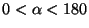.
) must be in the range
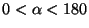.
The Z-matrix input is specified sequentially as follows:
tag1 tag2 i R tag3 i R j alpha tag4 i R j alpha k beta [orient] ...
The structure of this input is described in more detail below. In the
following discussion, the tag or number of the center being currently
defined is labeled as C (``C'' for current). The values
entered for these tags for centers defined in the Z-matrix input are
interpreted in the same way as the <tag> entries for Cartesian
coordinates described above (see Section 6.3). Figures
6.1, 6.2 and 6.3 display the
relationships between the input data and the definitions of centers
and angles.
| 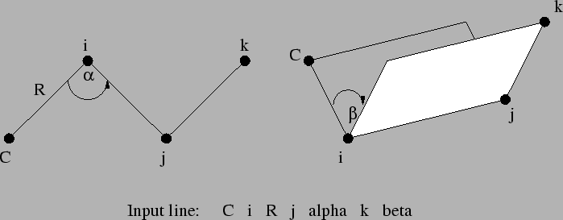 |
| 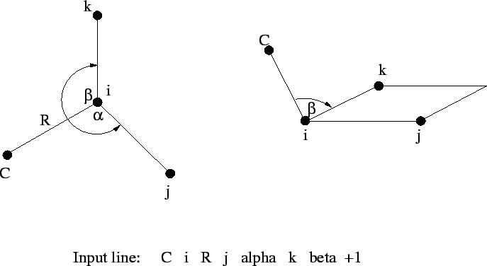 |
| 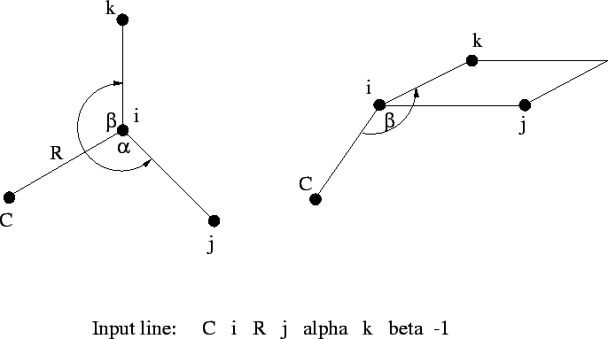 |
The Z-matrix input shown above is interpreted as follows:
tag1
Only a tag is required for the first center.
tag2 i R
The second center requires specification of its tag and the
bond length (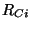) distance to a previous atom, which is identified by
i.
tag3 i R j alpha
The third center requires specification of its tag, its bond length distance
() to one of the two previous centers (identified by the
value of i), and the bond angle
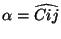.
tag i R j alpha k beta [<integer orient default 0>]
The fourth, and all subsequent centers, require the tag, a bond
length () relative to center i, the bond angle with
centers i and j (
), and either
i, j, and k (Figure 6.1), or
By default,  is interpreted as a dihedral angle (see Figure
6.1), but if the optional final parameter (
is interpreted as a dihedral angle (see Figure
6.1), but if the optional final parameter (<orient>) is
specified with the value 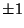, then  is interpreted as
the angle 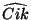. The sign of
is interpreted as
the angle 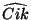. The sign of <orient> specifies the
direction of the bond angle relative to the plane containing the
three reference atoms. If <orient> is  , then the new center
(
, then the new center
(C) is above the plane (Figure 6.2); and if
<orient> is  , then
, then C is below the plane (Figure
6.3).
Following the Z-matrix center definitions described above, the user can
specify initial values for any symbolic variables used to define the
Z-matrix tags. This is done using the optional VARIABLES directive,
which has the general form:
VARIABLES
<string symbol> <real value>
...
Each line contains the name of a variable followed by its value.
Optionally, an equals sign (=) can be included between the
symbol and its value, for clarity in reading the input file.
Following the VARIABLES directive, the CONSTANTS
directive may be used to define any Z-matrix symbolic variables that remain
unchanged during geometry optimizations.
To freeze the Cartesian coordinates of an atom, refer
to Section 6.6. The general form of this directive
is as follows:
CONSTANTS
<string symbol> <real value>
...
Each line contains the name of a variable followed by its value. As
with the VARIABLES directive, an equals sign (=) can be
included between the symbol and its value.
The end of the Z-matrix input using the compound ZMATRIX
directive is signaled by a line containing either END or
ZEND, following all input for the directive itself and its
associated optional directives.
A simple example is presented for water. All Z-matrix parameters are specified numerically, and symbolic tags are used to specify connectivity information. This requires that all tags be unique, and therefore different tags are used for the two hydrogen atoms, which may or may not be identical.
geometry
zmatrix
O
H1 O 0.95
H2 O 0.95 H1 108.0
end
end
The following example illustrates the Z-matrix input for the molecule
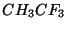. This input uses the numbers of centers to specify
the connectivity information (i, j, and k), and
uses symbolic variables for the Z-matrix parameters R, alpha, and beta, which are defined in the inputs for the
VARIABLES and
CONSTANTS directives.
geometry
zmatrix
C
C 1 CC
H 1 CH1 2 HCH1
H 1 CH2 2 HCH2 3 TOR1 0
H 1 CH3 2 HCH3 3 -TOR2 0
F 2 CF1 1 CCF1 3 TOR3 0
F 2 CF2 1 CCF2 6 FCH1 1
F 2 CF3 1 CCF3 6 FCH2 -1
variables
CC 1.4888
CH1 1.0790
CH2 1.0789
CH3 1.0789
CF1 1.3667
CF2 1.3669
CF3 1.3669
constants
HCH1 104.28
HCH2 104.74
HCH3 104.7
CCF1 112.0713
CCF2 112.0341
CCF3 112.0340
TOR1 109.3996
TOR2 109.3997
TOR3 180.0000
FCH1 106.7846
FCH2 106.7842
end
end
The input for any centers specified with Cartesian coordinates must
be specified using the format of the <tag> lines described
in Section 6.3 above. However, in
order to correctly specify these Cartesian coordinates
within the Z-matrix, the user must
understand the orientation of centers specified using
internal coordinates. These are arranged as follows:
By default redundant internal coordinates are generated for use in
geometry optimizations. Connectivity is inferred by comparing
inter-atomic distances with the sum of the van der Waals radii of the
two atoms involved in a possible bond, times a scaling factor. The
scaling factor is an input parameter of ZCOORD which maybe
changed from its default value of 1.3. Under some circumstances
(unusual bonding, bond dissociation, ...) it will be necessary to
augment the automatically generated list of internal coordinates to
force some specific internal coordinates to be included in among the
internal coordinates. This is accomplished by including the optional
directive ZCOORD within the geometry directive. The general
form of the ZCOORD directive is as follows:
ZCOORD
CVR_SCALING <real value>
BOND <integer i> <integer j> \
[<real value>] [<string name>] [constant]
ANGLE <integer i> <integer j> <integer k> \
[<real value>] [<string name>] [constant]
TORSION <integer i> <integer j> <integer k> <integer l> \
[<real value>] [<string name>] [constant]
END
The centers i, j, k and l must be
specified using the numbers of the centers, as supplied in the input
for the Cartesian coordinates. The ZCOORD input parameters are
defined as follows:
i-j-k and j-k-l.
A value may be specified for a user-defined internal coordinate, in
which case it is forced upon the input Cartesian coordinates while
attempting to make only small changes in the other internal
coordinates. If no value is provided the value implicit in the input
coordinates is kept. If the keyword constant is specified, then
that internal variable is not modified during a geometry optimization
with DRIVER (Section 20). Each internal coordinate may
also be named either for easy identification in the output, or
for the application of constraints (Section 6.6).
If the keyword adjust is specified on the main GEOMETRY
directive, only ZCOORD data may be specified and it can
be used to change the user-defined internal coordinates, including
adding/removing constraints and changing their values.
Internal coordinates specified as constant in a ZCOORD directive
or in the constants section of a ZMATRIX directive, will be
frozen at their initial values if a geometry optimization is
performed with DRIVER (Section 20).
If internal coordinates have the same name (give or take an optional sign for torsions) then they are forced to have the same value. This may be used to force bonds or angles to be equal even if they are not related by symmetry.
When atoms have been specified by their Cartesian coordinates, and internal coordinates are not being used, it is possible to freeze the cartesian position of selected atoms. This is useful for such purposes as optimizing a molecule absorbed on the surface of a cluster with fixed geometry. Only the gradients associated with the active atoms are computed. This can result in a big computational saving, since gradients associated with frozen atoms are forced to zero (Note, however, that this destroys the translational and rotational invariance of the gradient. This is not yet fully accommodated by the STEPPER geometry optimization software, and can sometimes result in slower convergence of the optimization. The DRIVER optimization package does not suffer from this problem).
The SET directive (Section 5.7) is used to freeze
atoms, by specifying a directive of the form:
set geometry:actlist <integer list_of_center_numbers>This defines only the centers in the list as active. All other centers will have zero force assigned to them, and will remain frozen at their starting coordinates during a geometry optimization.
For example, the following directive specifies that atoms numbered 1, 5, 6, 7, 8, and 15 are active and all other atoms are frozen:
set geometry:actlist 1 5:8 15or equivalently,
set geometry:actlist 1 5 6 7 8 15
If this option is not specified by entering a SET directive,
the default behavior in the code is to treat all atoms as active. To
revert to this default behavior after the option to define frozen
atoms has been invoked, the UNSET directive must be used (since
the database is persistent, see Section 3.2). The form
of the UNSET directive is as follows:
unset geometry:actlist
This keyword is needed only for for 1-, 2-, and 3-dimensional periodic systems.
The system keyword can assume the following values
When the system possess translational symmetry, fractional coordinates
are used in the directions where translational symmetry exists.
This means that for crystals 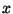, 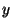 and 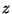 are fractional, for
surfaces and are fractional, whereas for polymers only is
fractional.
For example, in the following H O layer input (a 2-d periodic
system), and coordinates are fractional, whereas
is expressed in Å.
O layer input (a 2-d periodic
system), and coordinates are fractional, whereas
is expressed in Å.
geometry units angstrom O 0.353553 0.353553 2.100000000 H 0.263094 0.353553 2.663590000 H 0.444007 0.353553 2.663590000
Since no space group symmetry is available yet other than 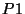, input of cell parameters is relative to the primitive cell. For example, this is the input required for the cubic face-centered type structure of bulk MgO.
system crystal lat_a 2.97692 lat_b 2.97692 lat_c 2.97692 alpha 60.00 beta 60.00 gamma 60.00 end